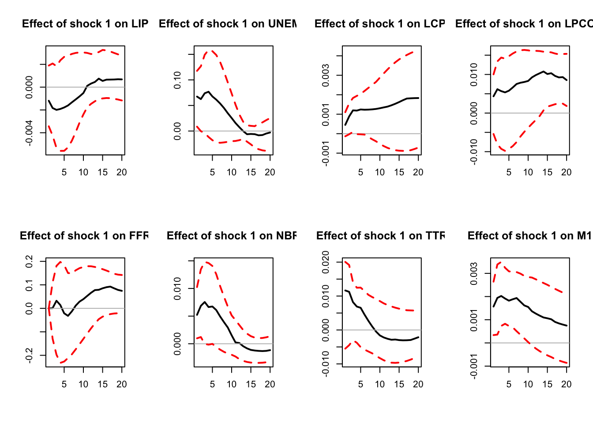
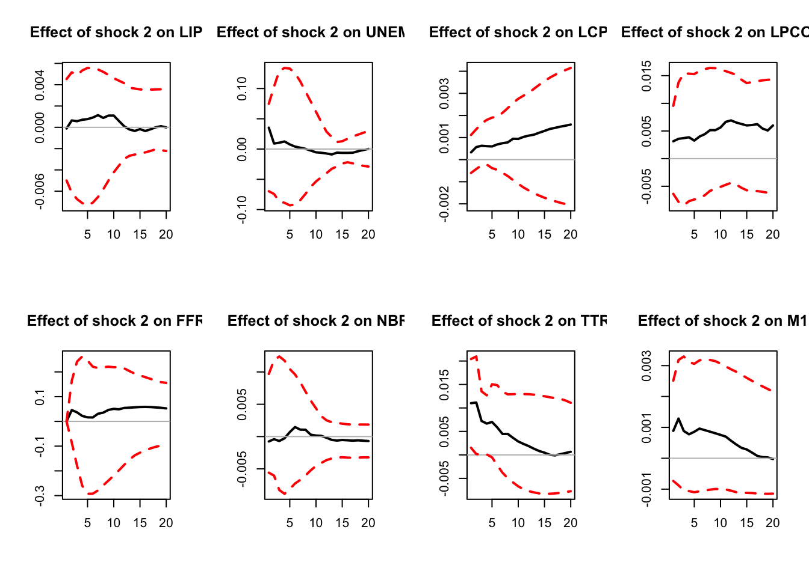
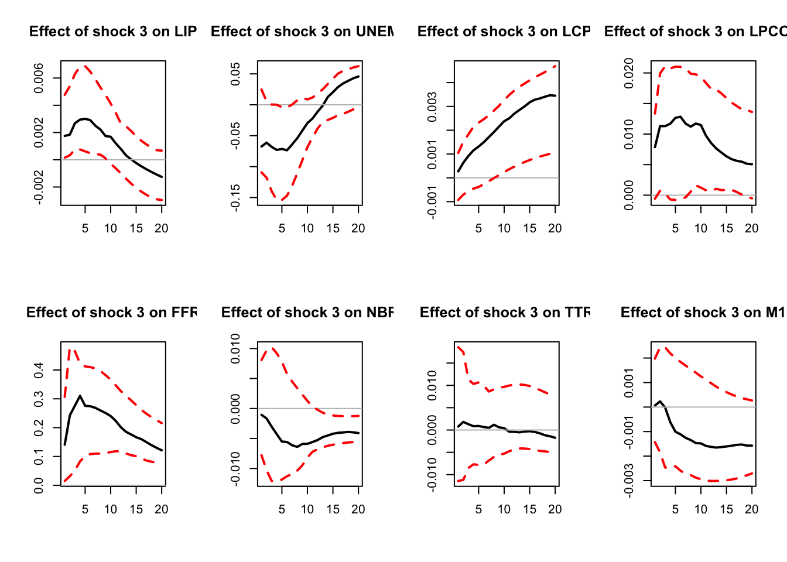
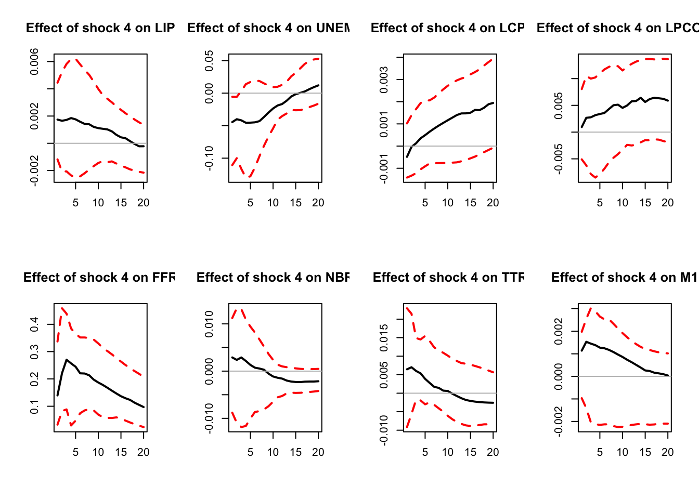
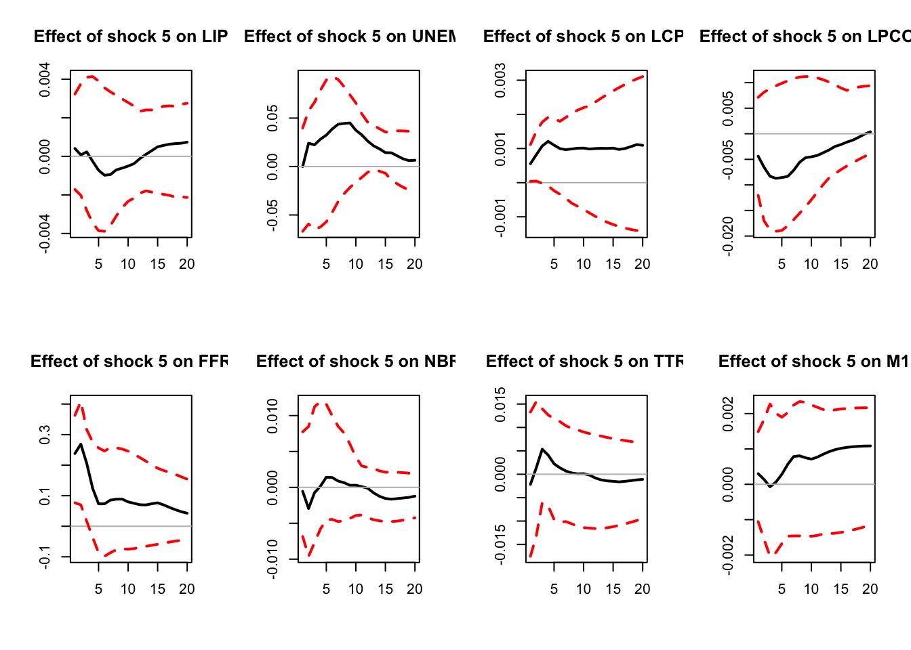
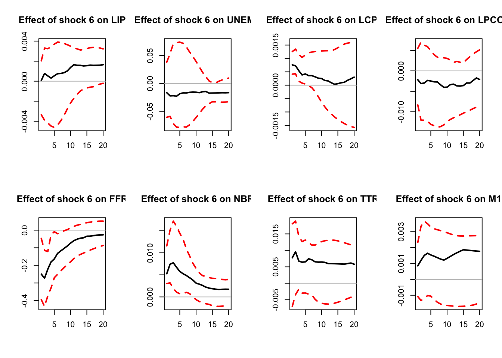

Chapter 5 Combining sign and zero restrictions
Sometimes we need to combine different types of restrictions. For instance:
- One shock satisfies both zero and sign restrictions.
- Some shocks can be identified with zero restrictions (SR or LR), others with sign restrictions.
- Some shocks satisfy the same zero restrictions (e.g. no LR effect on output) but can be distinguished from each other through sign restrictions.
In such instances, we must make independent draws from the set of all structural parameters satisfying the zero restrictions. How to do that? Arias, Rubio-Ramírez, and Waggoner (2018) propose to impose the zero restrictions on \(B\), and then check signs. Remember, \(\mathcal{P}=BQ\) is a candidate impact IRF. For each structural shock \(j\), define the \(m\)-column matrices \(Z_j\) (zero restrictions) and \(S_j\) (sign restrictions). Each row of \(Z_j\) (resp. \(S_j\)) defines a zero (resp. sign) restriction. \(Z_j\) has \(m-j\) rows at most (i.e., \(m-j\) zero restriction at most).
Example 5.1 In a 4-variable VAR, we want to impose that the first structural shock has no effect on variable 1, affects positively variable 2 and negatively variable 3 on impact: \[Z_1 = \begin{pmatrix}1 & 0 & 0 & 0\end{pmatrix}, \] \[S_1 = \begin{pmatrix}0 & 1 & 0 & 0\\ 0 & 0 & -1 & 0\end{pmatrix}. \]
For both zero and sign restrictions to be satisfied, we must have \[ Z_jb_j=0 \quad \mbox{and} \quad S_jb_j>0, \] where \(b_j\) is the \(j^{th}\) column of \(B\), i.e. the impact effect of the \(j^{th}\) structural shock.
The algorithm is as follows:
- For \(1\le j\le m\), draw \(u_j\in \mathbb{R}^{m+1-j-z_j}\) from a standard normal distribution (\(z_j\) is the number of zero restrictions imposed on the \(j^{th}\) shock) and set \(w_j = u_j/||u_j||\).
- Define \(Q= \begin{pmatrix}q_1&...&q_m\end{pmatrix}\) recursively by \(q_j = K_jw_j\) for any matrix \(K_j\) whose columns form an orthogonal basis for the null space of the matrix \[M_j = \begin{pmatrix} q_1&...&q_{j-1}&\color{blue}{(Z_jP)'}\end{pmatrix}'.\] (Vector \(q_j\) will then be orthogonal to \(\begin{pmatrix} q_1&...&q_{j-1}\end{pmatrix}\) and satisfy the zero restriction.)
- Set \(B=PQ\).
- Check sign restrictions (\(S_jb_j>0\) for all \(j\)?).
Perform \(N\) replications and report the median impulse response (and its confidence intervals).
Function svar.signs can run this algorithm. It is called as follows:10
library(IdSS);library(vars);library(Matrix)
data("USmonthly")
First.date <- "1965-01-01"
Last.date <- "1995-06-01"
indic.first <- which(USmonthly$DATES==First.date)
indic.last <- which(USmonthly$DATES==Last.date)
USmonthly <- USmonthly[indic.first:indic.last,]
considered.variables<-c("LIP","UNEMP","LCPI","LPCOM","FFR","NBR","TTR","M1")
n <- length(considered.variables)
y <- as.matrix(USmonthly[considered.variables])
sign.restrictions <- list()
SR.restrictions <- list()
horizon <- list()
#Define sign restrictions and horizon for restrictions
for(i in 1:n){
sign.restrictions[[i]] <- matrix(0,n,n)
horizon[[i]] <- 1
}
# 2 shocks on the demand for reserves
sign.restrictions[[1]][1,6] <- 1
sign.restrictions[[2]][1,7] <- 1
# 3 shocks that drive an endogenous response of the interest rate
sign.restrictions[[3]][1,1] <- 1
sign.restrictions[[3]][2,5] <- 1
sign.restrictions[[4]][1,2] <- -1
sign.restrictions[[4]][2,5] <- 1
sign.restrictions[[5]][1,3] <- 1
sign.restrictions[[5]][2,5] <- 1
# monetary policy shock
sign.restrictions[[6]][1,5] <- -1
sign.restrictions[[6]][2,3] <- 1
sign.restrictions[[6]][3,6] <- 1
# horizon for sign restrictions on monetary policy shock
horizon[[6]] <- 1:5
#Define zero restrictions
# 2 shocks on the demand for reserves
SR.restrictions[[1]] <- array(0,c(1,n))
SR.restrictions[[1]][1,5] <- 1 # no impact on the interest rate
SR.restrictions[[2]] <- array(0,c(1,n))
SR.restrictions[[2]][1,5] <- 1 # no impact on the interest rate
for(i in 3:n){
SR.restrictions[[i]] <- array(0,c(0,n))
}
res.svar.signs.zeros <- svar.signs(y,p=3,
nb.shocks = 6, #number of identified shocks
nb.periods.IRF = 20,
bootstrap.replications = 100, # = 1 if no bootstrap, = N if bootstrap
confidence.interval = 0.90, # expressed in pp.
indic.plot = 1, # Plots are displayed if = 1.
nb.draws = 10000, # number of draws
sign.restrictions,
horizon,
recursive =0,
SR.restrictions
)
Figure 5.1: IRFs; sign-restriction approach.

Figure 5.2: IRFs; sign-restriction approach.

Figure 5.3: IRFs; sign-restriction approach.

Figure 5.4: IRFs; sign-restriction approach.

Figure 5.5: IRFs; sign-restriction approach.

Figure 5.6: IRFs; sign-restriction approach.
# Output
IRFs.signs <- res.svar.signs.zeros$IRFs.signs # all the simulated IRFs
nb.rotations <- res.svar.signs.zeros$xx # total number of rotations
all.CI.median <- res.svar.signs.zeros$all.CI.median # median IRFs for the selected shocks
all.CI.lower.bounds <- res.svar.signs.zeros$all.CI.lower.bounds # lower-bound IRFs for the selected shocks
all.CI.upper.bounds <- res.svar.signs.zeros$all.CI.upper.bounds # upper-bound IRFs for the selected shocksReferences
Note that outputs are not reported here; just copy-paste in Rstudio to get the 6 sets of IRFs.↩︎